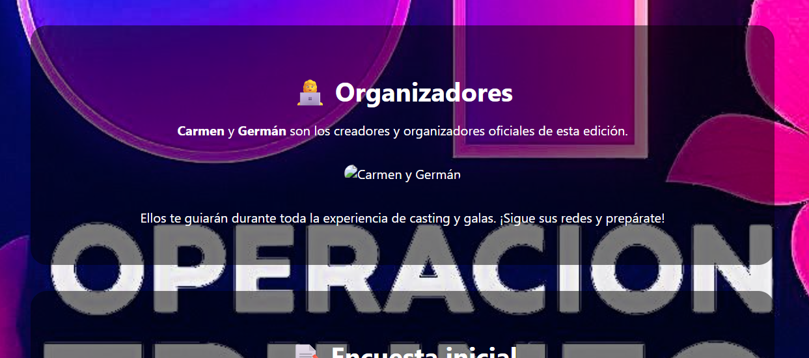

La academia musical definitiva en Roblox está por comenzar
🎤 Fase 1 y Fase 2 se celebrarán el mismo día: 1 de julio a las 17:00 h (hora de España).
👉 Fase 1: deberás preparar 2 canciones de la playlist oficial.
👉 Si pasas a Fase 2: cantarás 1 canción a tu elección.
¿Te gustaría formar parte del equipo técnico de OT Roblox?
🎬 El 3 de julio a las 17:00 haremos el casting para escoger:
Prepárate si te interesa otra forma de participar en esta aventura.
Carmen y Germán son los creadores y organizadores oficiales de esta edición.
Ellos te guiarán durante toda la experiencia de casting y galas. ¡Sigue sus redes y prepárate!
Antes del casting, necesitamos que completes esta breve encuesta para organizar mejor la experiencia. ¡Solo toma 1 minuto!
Responder encuestaSelecciona y ensaya 2 canciones de esta playlist para la Fase 1. Si pasas a la Fase 2, necesitarás una canción libre.
El público podrá votar por su favorito tras cada gala. Las votaciones se harán mediante un formulario especial que abriremos justo después de cada emisión.